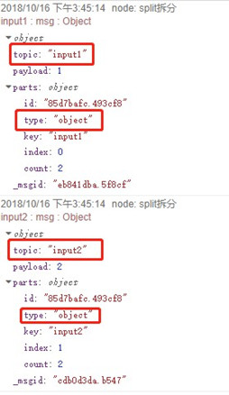

思特奇服务编排平台
1. 输入-inject
-含义
-标签图标以及功能图
-节点属性
2. 输入-http
-含义
-标签图标以及功能图
-节点属性
3. 输出-debug
-含义
-标签图标以及功能图
-节点属性
4. 输出-httpresponse
-含义
-标签图标以及功能图
-节点属性
5. 功能-function
-含义
-标签图标以及功能图
-节点属性
6. 功能-dubbo2
-含义
-标签图标以及功能图
-节点属性
7. 功能-http request
-含义
-标签图标以及功能图
-节点属性
8. 功能-switch
-含义
-标签图标以及功能图
-节点属性
-节点测试
9. 功能-change
-含义
-标签图标以及功能图
-节点属性
10. 功能-split
-含义
-标签图标以及功能图
-节点属性
11. 功能-join
-含义
-标签图标以及功能图
-节点属性
11. 功能-json
-含义
-标签图标以及功能图
-节点属性
11. 功能-xml
-含义
-标签图标以及功能图
-节点属性
一. 输入-inject
含义
手动或定期将消息注入流中。消息有效负载可以是各种类型，包括字符串，JavaScript对象或者当前时间。
标签图标以及功能图
节点属性
(1)内容：inject标签的使用方式。其中flow是在当前流，global是在整个流中，文字列是输入文字，数字是输入阿拉伯数字，boolean是true或者false，json是输入json字符串，二进制流是输入二进制，时间戳是自1970年1月1日以来以毫秒为单位的当前时间的时间戳。
(2)主题：该标签的主题，存放在msg.topic中
(3)重复：消息的发送计划
(4)名称：该节点的名称
二. 输入-http
含义
用于创建Web服务的HTTP端点。
标签图标以及功能图
节点属性
(1)请求方式：发起HTTP请求的方式，其中包括GET、POST、DELETE、PUT、PATCH。
(2)URL：访问路径，可使用RESTful风格。路径示例: http://172.21.11.170:1880/node
(3)名称：该http节点的名称
三. 输出-debug
含义
用于测试节点在运行过程中的信息，可以输出节点的完整信息以及节点的payload信息（节点中的信息默认存储在msg.payload中）。
标签图标以及功能图
节点属性
(1)输出：①msg.payload:只输出debug连接节点的payload中的内容。②完整信息:会输出debug连接的节点的全部信息，如_msgid（节点的id），topic（节点的主题，默认为“”），payload（节点的值存储信息）
(2)目标：①调试窗口：将节点信息输出到调试窗口。②Console：将节点信息输入的运行程序的IDE的控制台
(3)名称：该debug节点的名称
四. 输出-httpresponse
含义
将响应发送回从HTTP输入的节点
标签图标以及功能图
节点属性
(1)名称：该节点的名称
(2)状态码：响应返回的http状态码。默认值为200。
(3)Header：响应头的信息设置
五. 功能-function
含义
一个JavaScript函数块，用户针对节点接收的消息运行。消息作为名为msg的JavaScript对象传入。它将具有包含消息正文的msg.payload属性。该函数返回一个消息对象（或多个消息对象），也可以选择不返回任何内容以暂停流。
标签图标以及功能图
节点属性
(1)名称：该节点的名称
(2)函数：可以在其中完成JavaScript的代码块，节点中的信息默认都是在msg.payload里面，可以对其中的值进行获取以及修改，还可以进行新节点值的创建。
(3)输出：节点输出的条数，默认是一条。
六. 功能-dubbo2
含义
完成dubbo连接的组件。
标签图标以及功能图
节点属性
(1)name：该节点的名称
(2)application：对应hsf的application即应用,可空。
(3)注册中心：zookeeper的注册中心地址，如127.0.0.1:2181，必填。
(4)Hsf版本：对应使用什么样子的hsf版本信息，必填。
(5)服务接口：调用服务的接口名称。如:com.alibaba.dubbo.demo.DemoProvider，必填。
(6)服务版本：调用服务的指定版本对应服务的version中的值，如果服务没有配置version可为空，若配置必填。
(7)超时时间：调用的服务的超时时间默认系统默认5秒，可空。
(8)服务分组：如果服务分组对应服务group，可空。
(9)函数定义：接口调用的方法的模型，如：{sayHello(name){return [java.String(name)];}} 如果有多个方法可以使用逗号分开。
(5)服务接口：调用服务的接口名称。如:com.alibaba.dubbo.demo.DemoProvider，必填。
(10)服务标识：原子服务的唯一标识。
七. 功能-http request
含义
发送http请求并响应。
标签图标以及功能图
节点属性
(1)请求方式：HTTP的请求方式，其中包括put，get，post，delete
(2)url：请求地址。例如http://127.0.0.1:8080/node。
(3)超时时间：请求的超时时间，系统默认输入10s。如果不输入或者输入为0，则为全局默认2分钟。
(4)服务标识：标识该节点的引用的原子服务的唯一id，必填项。
(5)返回：返回结果的数据类型，其中包括UTF-8字符串。
(6)名称：该节点的名称。
八. 功能-switch
含义
根据消息的属性值或序列对消息进行路由。
标签图标以及功能图
节点属性
(1)名称：节点的名称。
(2)属性：对消息属性的选择。
(3)操作域：可以对传入的值做判断，条件符合的参数输出到相应的节点，如下图所示，左侧红色区域可以对值进行逻辑判断，右侧的红色区域表示值的去向。。
节点测试
(1)流程分析：在function标签中设置msg.payload=2。在switch标签中设置如果msg.payload=1，走向第一个dubug。如果msg.payload=2，走向第二个debug。
(2)流程图
(3)测试结果
九. 功能-change
含义
设定，修改，转移，删除消息，流上下文，或者全局上下文的属性。
标签图标以及功能图
节点属性
(1)名称：节点的名称。
①设定：将2的信息设置的1的信息里面，将设置到msg.payload里面。
②修改：将节点中的信息查找到并进行修改。在msg.payload中查找为2的字符串并替换为3。
删除：将上下文的信息进行删除，例如可以将msg.payload中的信息进行删除。
④转移：将节点中的信息转移到另一个节点中，并删除上一节点的信息。例如，将msg.payload中的信息转移到msg.id中。
十. 功能-split
含义
将消息拆分为一系列的消息。
标签图标以及功能图
节点属性
(1)字符串/Buffer：拆分字符串，在msg.payload中设置了字符串“2&&3”,使用split标签进行拆分后，会出现两个payload的信息，分别存储。
(2)数组：对数组进行拆分。
对象：对对象进行拆分。其中可以将对象的key复制到msg.topic中。

十一. 功能-join
含义
将消息序列连接到单个消息里面。
标签图标以及功能图
节点属性
(1)模式
①自动：与拆分节点配对使用时，它将自动加入消息以反转已执行的拆分。
②手动：手动配置合并合并的方式加入消息序列，可以设置合并的的节点，输出方式以及合并的符号。
③缩减序列：对序列中的所有消息应用表达式以将其减少为单个消息。
(2)名称：该节点的名称。
十二. 功能-json
含义
将参数在json字符串及其JavaScript对象之间进行转换。
标签图标以及功能图
节点属性
(1)操作：可以设定对参数的操作。
①JSON字符串和对象互转：将json字符串转换成js对象。
②总是转为json字符串：将参数转换为json字符串。
③总是转为js对象：将参数转换为js对象。
(2)属性：装换值的位置，默认为msg.payload中的参数信息。
(3)名称：该节点的名称。
十三. 功能-xml
含义
在xml字符串及其JavaScript对象之间进行转换。
标签图标以及功能图
节点属性
(1)属性：设置xml标签进行转换的域，默认是msg.payload。
(2)名称：该节点的名称。
(3)忽略属性名称：勾选后在报文中不显示报文中各个节点中值的属性，不勾选会显示属性名称。如下图所示：
不勾选
勾选